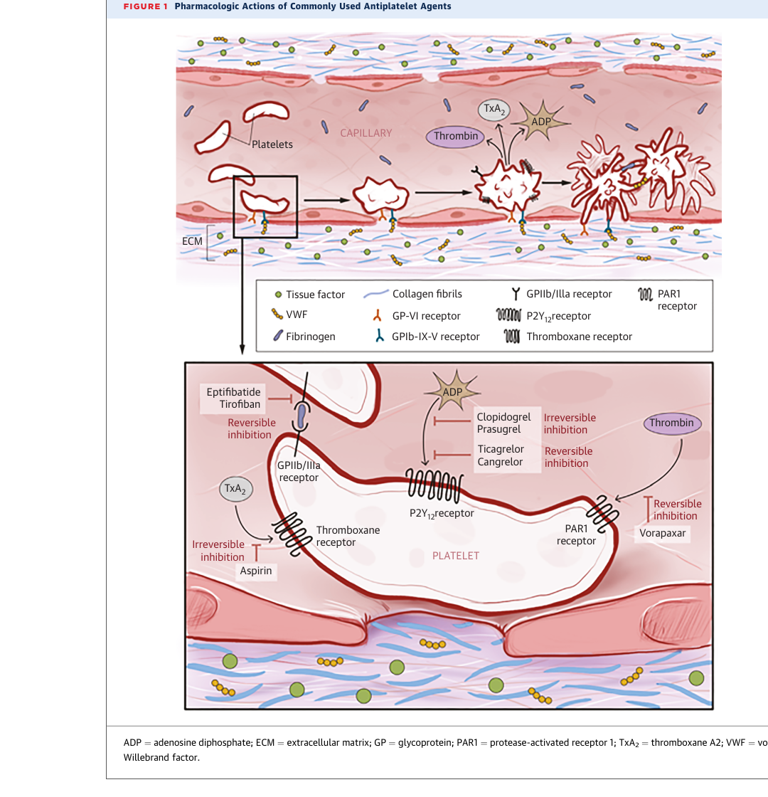
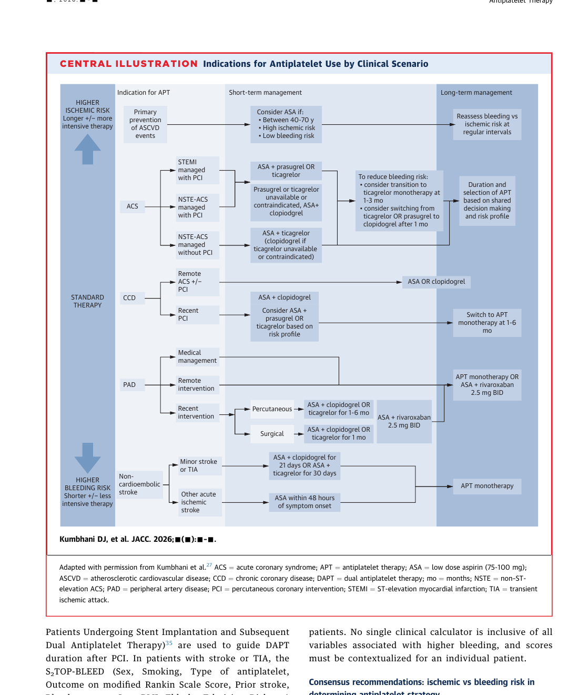

讀書筆記
抗血小板治療：
不是越多越久，
而是風險平衡
重點：依臨床情境、缺血風險、出血風險與時間軸調整。
原文
Kumbhani DJ, et al. ACC Scientific Statement, JACC 2026. DOI: 10.1016/j.jacc.2026.05.037阿婷醫師的讀書筆記
ACC Scientific Statement 2026
來源：Table 1、Central Illustration、pp. 2-10


心血管風險較高，且沒有出血風險增加者，可考慮低劑量 aspirin。
文件指出高齡族群常規預防使用 aspirin 應避免。
若為高出血風險，即使 ASCVD 或 CAC 風險較高，淨效益可能轉為傷害。
來源：Table 1、Primary prevention section, pp. 2, 10-11
之後轉單一抗血小板治療。
prasugrel 或 ticagrelor 為優先選項；高齡或出血疑慮時 clopidogrel 可較適合。
但臨床事件效益有限，且增加出血。
來源：Table 1、Table 2、Postrevascularization section, pp. 2, 5-14
接續 P2Y12 inhibitor monotherapy 可降低出血，且在多數研究未增加缺血事件。
資料較支持 ticagrelor，其次 prasugrel；clopidogrel 或 aspirin 的適用性需更謹慎。
從 ticagrelor 或 prasugrel 轉為 clopidogrel，可在選定病人降低出血風險。
STEMI 或高缺血風險病人需特別小心。
來源：Consensus recommendations postrevascularization, pp. 12-14
新資料顯示，相較 aspirin，可能有較佳缺血保護且出血相近或較低。
只適合高缺血、可接受出血風險的選定病人；效益需與出血交換。
可考慮於穩定 CAD 或 PAD 且無既往重大出血或腦血管事件的高風險病人。
來源：Long-term antithrombotic therapy section, pp. 14-16
來源：PAD section, pp. 16-18
若接受血栓溶解治療或較嚴重中風，DAPT 的角色較不明確；長期 DAPT 不建議。
來源：Stroke/TIA section, pp. 16-18
OAC + aspirin + P2Y12 抑制劑出血風險高，通常應縮到最短期間。
PCI 後若需抗凝，aspirin 通常可在 1 個月內停用；clopidogrel + DOAC 為常見組合，長期可回到 DOAC 單用。
來源：AF/VTE with antiplatelet needs section, pp. 17-18
來源：Table 5、Perioperative management section, pp. 18-19
不建議常規使用，但可在 P2Y12 降階或特殊情境輔助決策。
高出血風險或併用抗凝者建議使用 PPI；omeprazole 與 clopidogrel 的臨床影響未被證實。
MI 或 PCI 後早期不規則服藥，與支架栓塞和 MACE 風險上升相關。
來源：Monitoring and adherence sections, pp. 19-21
教育用途整理；臨床決策請回到原文與當地指引，並依病人狀況判斷。